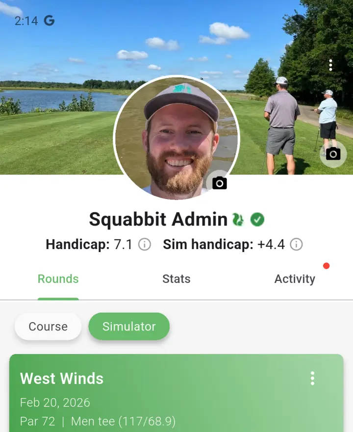

Simulator Rounds
Squabbit keeps your simulator rounds and course rounds completely separate. Each has its own handicap, its own round history, and its own section on your profile. If you play on a simulator regularly, this gives you an accurate picture of how you perform indoors versus on the course.
Marking a round as a simulator round
To record a simulator round, enable the "Simulator round" toggle on the scorecard. This flags the round as a sim round so it feeds into your simulator handicap instead of your course handicap.

If you are playing in a simulator tournament or league, you don't need to do this manually. Rounds played inside a sim tournament or league are automatically treated as simulator rounds.
You can also speed up score entry by importing scores with AI. Just snap a photo of your final scores on the simulator's screen and Squabbit will read them in for you.
Simulator handicap and profile
Squabbit calculates a dedicated simulator handicap using the same WHS formula as your course handicap, but based exclusively on your sim rounds. Once you have enough simulator rounds recorded, a simulator handicap will appear on your profile next to your course handicap. Tap the info icon beside it to see the full calculation breakdown.
Your profile's round history also has "Course" and "Simulator" filter chips at the top. Tap "Simulator" to see only your sim rounds, or "Course" to see your on-course rounds. This keeps everything organized and makes it easy to look back at your indoor sessions.

Simulator tournaments
You can mark a tournament as a simulator tournament when creating it. This does two things: it automatically uses each player's simulator handicap for all scoring and leaderboard calculations, and it ensures every round played in the tournament counts toward simulator handicaps rather than course handicaps. Players don't need to flip any toggles — the tournament handles it.

Simulator leagues
Leagues work the same way. Mark a league as a simulator league and all of its events will pull from simulator handicaps. If you have the league's handicap source set to "League Events", each player's league handicap will be calculated from only the sim rounds they have played within that league.
Simulator courses
You can flag a course as a simulator course to help keep your course list organized. This is purely for your own reference and doesn't affect scoring or handicaps.